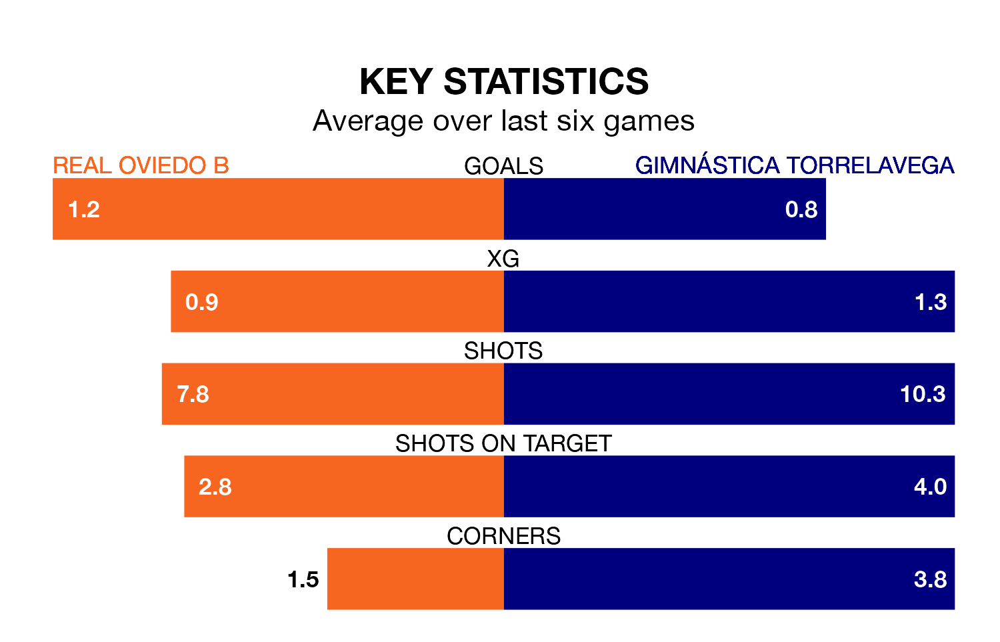

Gimnástica Torrelavega come to the Estadio El Requexón to play Real Oviedo B on early Sunday in terrible form, having collected just one point from their last six games.
The visitors have drawn just one of their last six fixtures, while Oviedo B have a win and four draws.
Gimnástica Torrelavega are 16th in the table after 18 games, of which they have won four and drawn four, earning 16 points.
Oviedo B are two places ahead of the away side in 14th, with three wins and nine draws putting them on 18 points.
With 16 goals in 18 games so far this season, the hosts are scoring at below the league average rate with 0.9 goals per game. And they are conceding at an average rate, letting in 22 goals at a rate of 1.2 per game.
Gimnástica Torrelavega, meanwhile, are average scorers, with 1.2 goals per game. They have conceded 1.7 goals per game.
In the last five years, Oviedo B and Gimnástica Torrelavega have played each other on four occasions. Oviedo B won two of them, Gimnástica Torrelavega one, and they drew once.
On average, Oviedo B scored 1.2 goals and Gimnástica Torrelavega 0.8 in those matches.
Their last meeting was on September 10, when they played out a 1-1 draw.
Oviedo B's last match was on January 14, a 0-0 draw against Villalbés.
Gimnástica Torrelavega lost 2-1 against Pontevedra CF last time out, also on Sunday.
Updated: 14:53 (UTC), 16/01/24